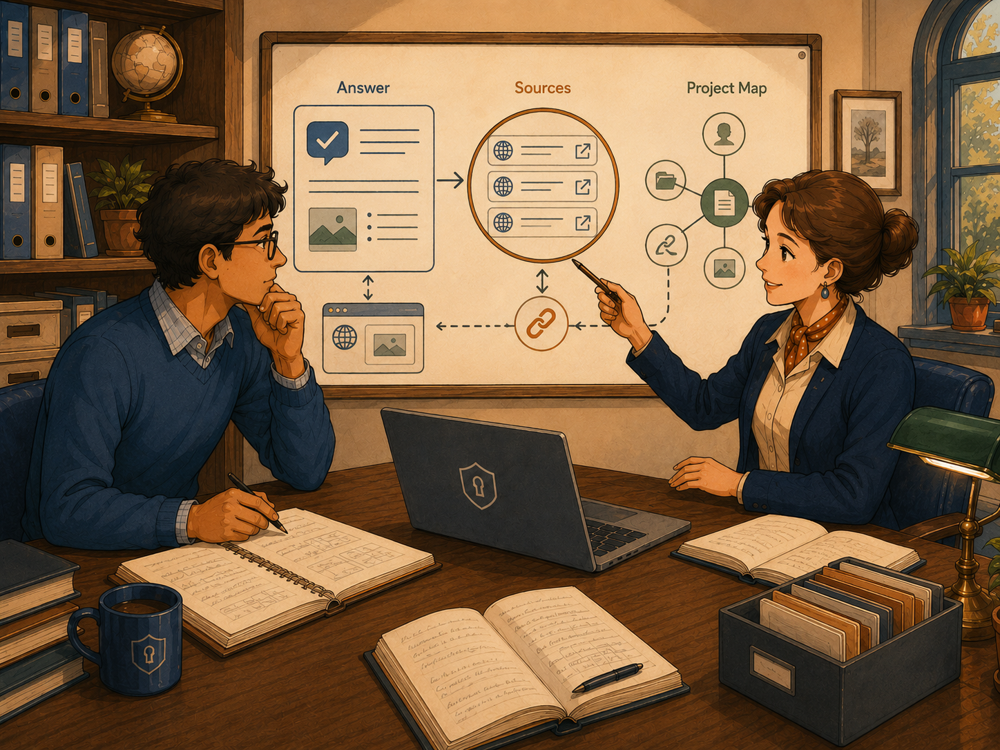
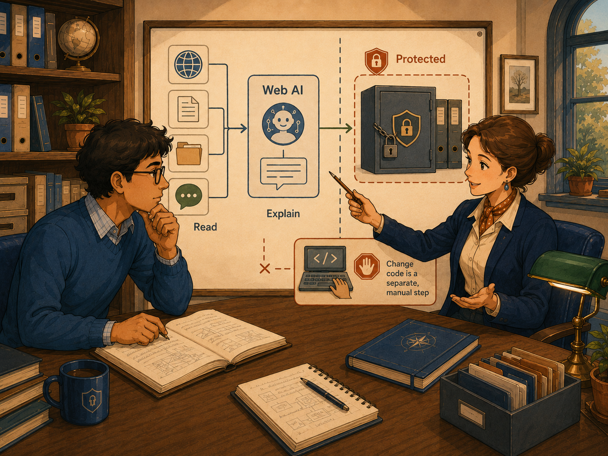

KANDA Reasoner Help
First-Time User TutorialWeb AI
Combine current web research with selected project context, inspect the sources, and keep every proposed source change read-only until a separate governed workflow is completed.
What Web AI Means
Web AI is the web-connected assistant in KANDA Reasoner. It can use current web information together with project context prepared by KANDA.
In plain English: Web AI is like a research assistant with two desks. One desk holds current web sources. The other holds the selected project context.
Web AI is useful when a question depends on current documentation, external standards, recent technical information, public sources, or a combination of web research and project-specific evidence.
What This Tab Does
- Answers a question in plain English.
- Searches for current external information.
- Uses available project context.
- Shows source links.
- Relates answers to project areas.
- Preserves project-specific conversation memory.
- Creates a read-only Shadow Preview.
- Copies or exports conversation material.
Before You Start
- Select the correct project.
- Confirm that project context is current.
- Open Config AI and confirm the web model.
- Check internet access.
- Start a new session when changing projects or topics.
- Ask one focused question.
- Read important sources before acting.
The Safest First-Time Workflow
Step 1 - Select the correct project
Use the project selector and confirm the displayed project path.
Step 2 - Confirm the web model
Open Config AI and check the provider, model, authentication, web-search support, and availability.
Step 3 - Start a clean session
Use New session when beginning a separate topic or after changing projects.
Step 4 - Ask one focused question
Type one clear request in the message box.
Step 5 - Read the answer
Look for confirmed facts, project-specific findings, assumptions, uncertainty, and recommendations.
Step 6 - Inspect the sources
Open important source links and prefer official, primary, and current material.
Step 7 - Inspect the project connection
Use project mapping, file evidence, symbol evidence, or Brain Navigator.
Step 8 - Use Shadow Preview only when needed
Review a proposed result without automatically writing it to project files.
Selecting the Correct Project
Select the folder containing the actual project. Avoid an entire drive, a parent folder holding unrelated projects, an old copy, an export folder, or a temporary patch folder.
Refresh project context after meaningful source changes.
Web Model and Provider Controls
Open Config AI
Opens the shared AI configuration.
Provider
The external service supplying the web-connected model.
Model
The selected AI system. Models vary in speed, context size, source support, code reasoning, and cost.
API key or authenticated connection
Some providers require a key or signed-in connection. Never paste a private key into the conversation.
Refresh models
Refreshes the model list after configuration changes.
Web-search setting
Enable web search for questions requiring current external information.
Asking a Good Question
A good question includes the topic, exact task, project area, preferred source type, and expected output.
- Use official documentation to explain the current authentication flow and relate it to the project's login modules.
- Compare two current libraries and identify which fits this project's architecture better.
- Find the latest official migration guidance and show which project files may be affected.
- Explain this error using current documentation and displayed project evidence.
Conversations and Memory
New session starts a clean conversation.
Conversation history stores earlier Web AI exchanges.
Project memory can preserve helpful project context but may also preserve old assumptions.
Clear memory when changing projects, testing a clean answer, or after significant architecture changes.
Reading an Answer Correctly

Main answer
The assistant's explanation, potentially combining web research and project reasoning.
Sources
Open important sources and check the publisher, date, official status, relevance, and current version.
Project evidence
Files, symbols, mapped areas, or collected context explaining why the answer relates to the project.
Uncertainty
Ask which claims are confirmed, inferred, or still uncertain.
Source Quality
Prefer official documentation, standards, original research, official repositories, release notes, and direct provider documentation.
Be cautious with copied articles, old tutorials, unsourced summaries, unverified forum answers, search snippets, and material for older software versions.
Brain Navigator and Project Mapping
Use project mapping to understand feature ownership, likely files, connections between project areas, and where exact source should be inspected.
Project mapping is navigation assistance, not proof that every relevant file was found.
Shadow Preview
Shadow Preview displays a proposed change or structured result in a read-only window.
Inspect the proposed text, affected areas, intent, warnings, uncertainty, and likely source relationship.
Copying and Exporting
Web AI may copy answers, source links, conversation material, or Markdown research records.
Review exports before sharing because they may contain project paths, code excerpts, source links, and conversation context.
What Web AI Can and Cannot Prove
Web AI can collect current sources, explain information, compare options, combine web and project context, identify likely project areas, and prepare a reviewable suggestion.
It cannot guarantee that every source is correct or current, that every project file was included, that static context matches runtime behavior, or that a suggested change is safe.
What Success Looks Like
- Correct project selected.
- Working web model.
- One focused question.
- Clear answer.
- Visible sources.
- Relevant project mapping.
- Uncertainty identified.
- No unexplained provider error.
- No automatic source modification.
- Clear next verification step.
Common Mistakes
Common mistakes include asking without selecting the project, using old project context, trusting only the summary, ignoring source dates, using broad questions, keeping old memory after changing projects, treating Shadow Preview as installation, and sharing unchecked exports.
If Something Goes Wrong
Check provider connection, authentication, selected model, internet access, active request state, selected project, project context, memory, source mode, and diagnostic log.
Ask specifically for current official sources when source quality is poor or information appears outdated.
First-Time Checklist
- Correct project selected
- Current project context available
- Correct provider and model
- Internet connection available
- New session when appropriate
- One focused question
- Important sources opened
- Source dates checked
- Project mapping checked
- Assumptions and uncertainty identified
- Shadow Preview treated as read-only
- Separate validation plan prepared before implementation
Important Safety Boundary

Web AI can read, research, explain, compare, and preview. It does not automatically install a patch, validate a release, approve a source change, or freeze project behavior.
Final Rule
Select the correct project, ask one focused question, verify the sources, confirm the project connection, and treat every proposed change as read-only until a separate governed implementation is completed.